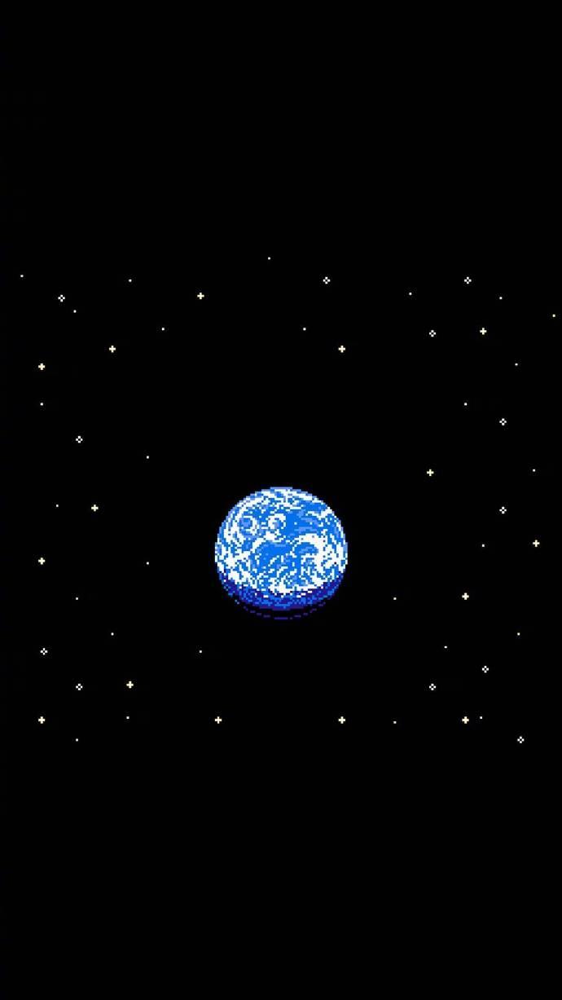

一、window对象是bom的顶级对象
1.window对象概念，使用
function add(){
}
add() == window.add()
2.location
window.location 可以让用户获取当前页面地址以及重定向到一个新的页面。
window.location.href = '地址'； 可以读也可以写，写的时候相当于转向另外一个页面
history 对象包含浏览器的历史记录，window可以省略。这些历史记录以栈（FIFO）的形式保存。页面前进则入栈，页面返回则出栈。
history.back(-1) 历史记录往前走一页
history.forward(-1) 历史记录往后走一页
navigator 是一个只读对象，它用来描述浏览器本身的信息，包括浏览器的名称、版本、语言、系统平台、用户特性字符串等信息。最有用的是拿到cookie
screen 提供了用户显示屏幕的相关属性，比如显示屏幕的宽度、高度，可用宽度、高度availheight（会减去任务栏）。
3.window.onload
window.onresize //浏览器窗口发生改变，就会执行这个事件；
二、event 对象
1. event概念，作用
系统给我们封装的，任何事件都会有这个event对象，就是回调函数的第一个形参；
2. event兼容性处理
3. event.target || event.srcElement作用
4. clientX & clientY 拿的是鼠标相对视口的（眼睛所看的范围）,水平距离和垂直距离,相对的是视口的左上角（以视口左上角为原点）
pageX pageY 拿的是鼠标相对页面的,水平距离和垂直距离,相对的是页面的左上角（以页面左上角为原点）
offsetX offsetY 拿的是鼠标相对自身元素的,水平距离和垂直距离,相对的是自身元素左上角（以自身元素左上角为原点）
js操作的所有样式都是行内样式！！因为优先级最高
案例：1.鼠标跟随
2.学生管理系统
Document
